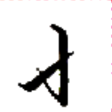
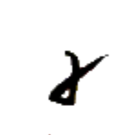
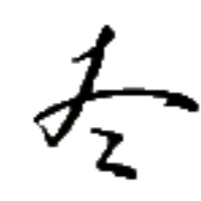
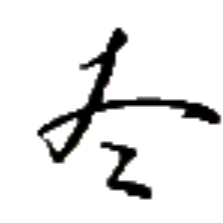

加値 アㇳ·マㇰ⤴ 【加値】
[名詞] （ボードゲームにおける）季節終了時のボーナス得点
別而 パウ→ワ· 【別而】
[文接続詞] しかし、けれども、ところが、だが、しかしながら、とはいえ、とはいっても
意之別字 シャー⤴ア·パウ→マン→ 【意之別字】
[名詞] 歴史的には同音/類音の単語を表していた字が、単語の意味の差に基づいて複数に分化するようになったもの
馬虎之別 マウン→ダウ⤴ア·パウ→ 【馬虎之別】
[名詞] 知る人ぞ知る、分かる人には分かる
燐字を知っている者は 馬【馬】と 虎【虎】の字を容易に区別できることから、慣れていれば区別ができるが、不慣れな者には区別が難しいようなことを表す。
シュー→ 【裁】
[動詞] 対処する、(部屋などを)片付ける
[名詞] (セッカイクの)投げ棒
[略号] 裁集【裁集】（アイル共和国司法省）
連将撃裁 ニエㇰ→ワイ→クㇳ⤴シュー→ 【連将撃裁】
[四字熟語] しっかりと準備をした上で思い切った行動をすること

ワ· 【而】
[文接続詞] ～して、～したら、～したけれど、そして、しかし、けれども
別而 パウ→ワ· 【別而】
[文接続詞] しかし、けれども、ところが、だが、しかしながら、とはいえ、とはいっても
 
